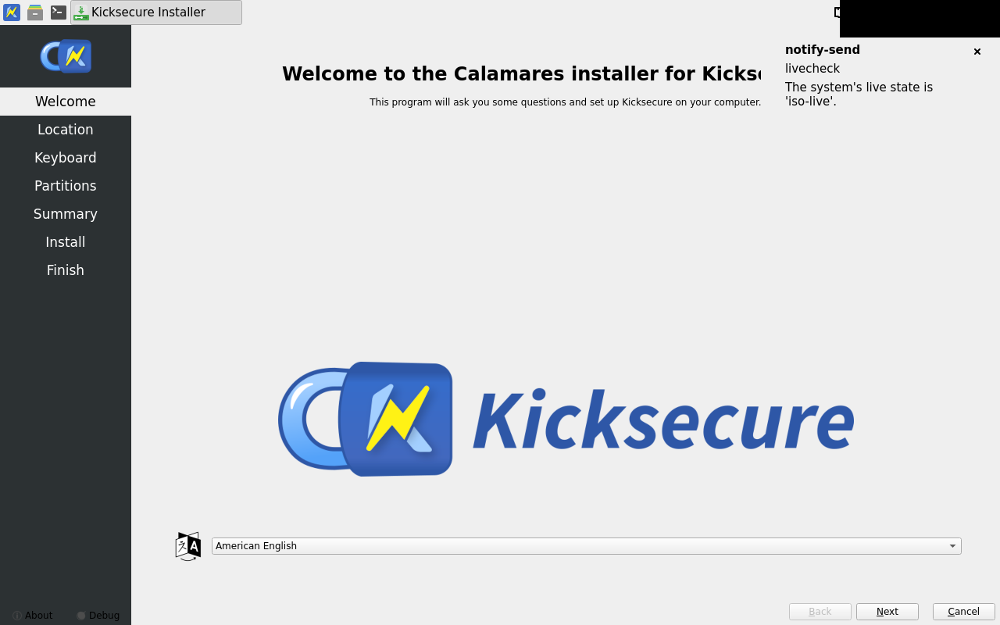
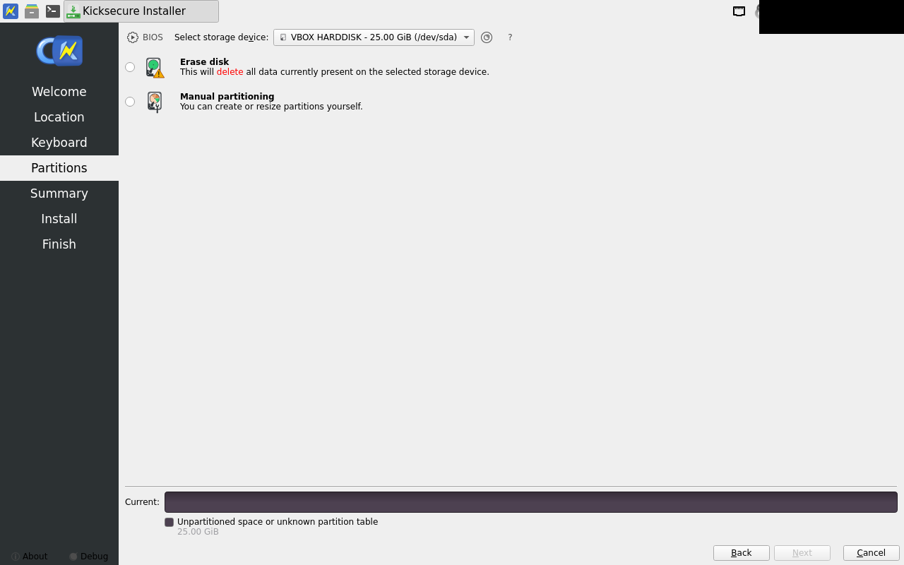
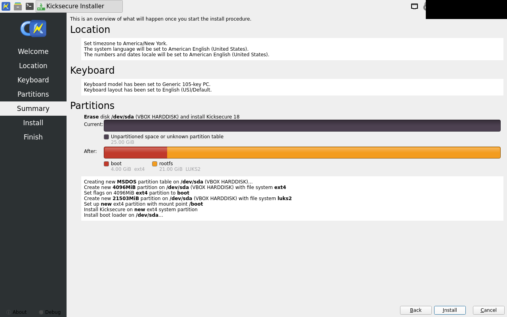
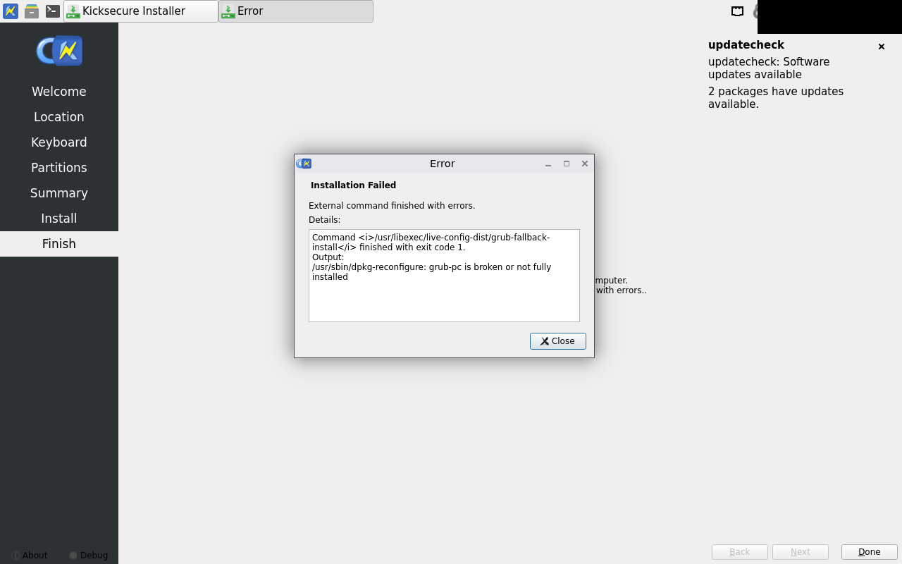
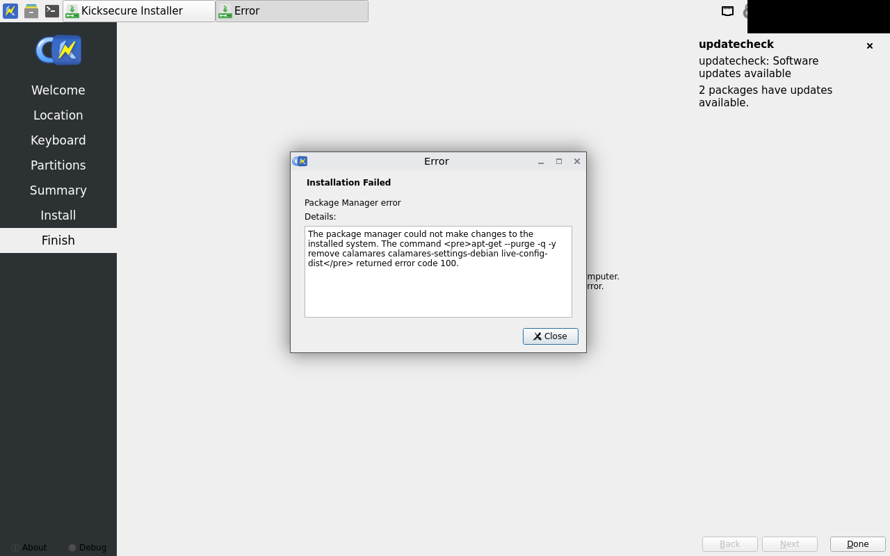

calamares-install fail
exit 5
...g non-emergency job "Running shell processes..."
.. Skipping non-emergency job "packages"
.. Skipping non-emergency job "Running shell processes..."
.. Skipping non-emergency job "dracut"
.. Skipping non-emergency job "Unmounting file systems..."
.. Skipping non-emergency job "Running shell processes..."
17:22:52 [1]: void Calamares::ViewManager::onInstallationFailed(const QString&, const QString&)
ERROR: Installation failed: "External command finished with errors."
.. - message: "External command finished with errors."
.. - details: Command <i>/usr/libexec/live-config-dist/grub-fallback-install</i> finished with exit code 1.
Output:
/usr/sbin/dpkg-reconfigure: grub-pc is broken or not fully installed
17:22:52 [6]: void Calamares::ViewManager::onInstallationFailed(const QString&, const QString&)
Calamares will quit when the dialog closes.
17:22:52 [6]: void Calamares::callQmlFunction(QQuickItem*, const char*)
QML "onLeave()" is missing.
17:22:52 [6]: void Config::doNotify(bool, bool)
Notification not sent; completion: failed
17:22:52 [6]: void {anonymous}::PowerManagementInterface::uninhibitSleep()
Sleep was never inhibited.
fail welcome -- differs beyond tolerance
approved golden (before):

fail partitions -- within tolerance

fail summary -- within tolerance

fail failure -- differs beyond tolerance

approved golden (before):
